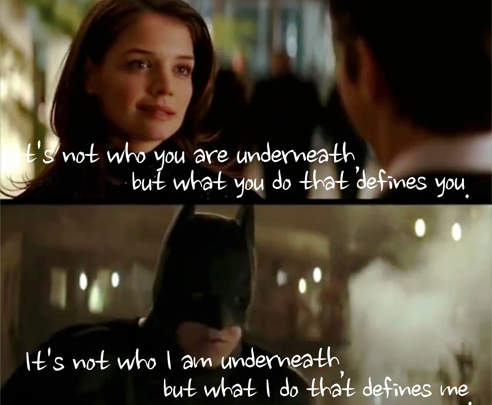
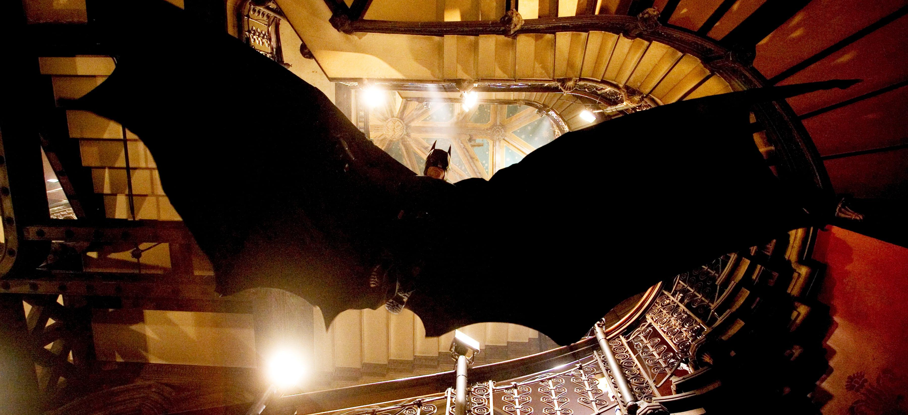

Quotes
It’s not who I am underneath, but what I do that defines me.
重要なのは自分が何者なのかではなく自らの行動である
Why do we fall?
So we can learn to pick ourselves back up.
なぜ人は落ちるのか？
それは自分で立ち直ることを学ぶためだ。
You either die a hero or you live long enough to see yourself become the villain.
ヒーローとして死ぬか、生き延びて悪に染まった自分を見るかさ
You see, madness, as you know, is like gravity.
All it takes is a little push!
お前も知っての通り狂気は重力のようなもの。
人は一押しで落ちていく
A hero can be anyone.
Even a man doing something as simple and reassuring as putting a coat around a little boy’s shoulders
to let him know that the world hadn’t ended.
ヒーローは誰でもなれる。簡単なことでいいんだ。
少年の肩にコートを掛け、世界は終わりじゃないと教えて安心させるようなことだ